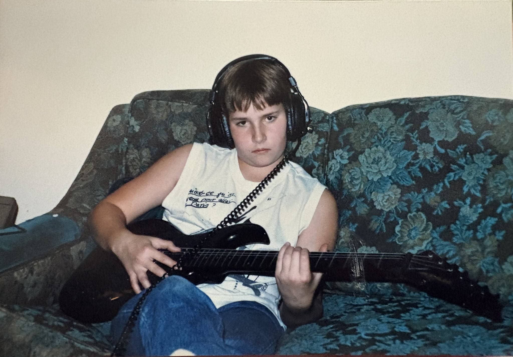

He listened.
Not just to solve the immediate problem. To understand what someone was really trying to do.
October 24, 1973 — August 3, 2026
Curious about everything.
Interested in everyone.
Garth was drawn to whatever was just beyond the edge of what he already knew. Film, video, music, research, technology, people, ideas—he followed the interesting thread and usually found someone else at the other end of it.
At UBC Okanagan, he helped build spaces and systems that opened doors for other people. But the lasting thing was never just the technology. It was the patience, curiosity, and generosity he brought to the people trying to use it.
He noticed something interesting.
Then he went off to find out more.
Not just to solve the immediate problem. To understand what someone was really trying to do.
People, disciplines, institutions, technologies—Garth was often the link between things that hadn’t met yet.
Every review told him to narrow his focus. Every year he returned with several more fascinating things on his plate.
“I’d like to spend more time learning about what’s really happening in all corners of the UBCO and UBC campuses…”
— Garth, 2016 self-assessment
It seems the reaching started early.